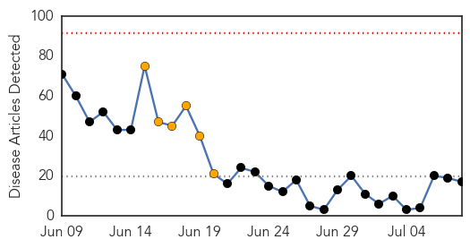
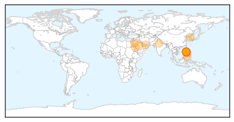
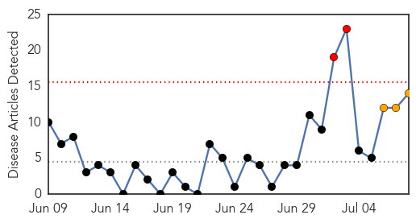
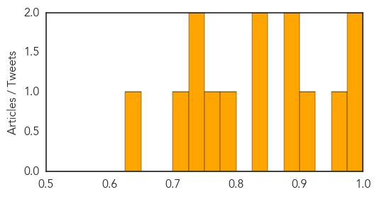

MERS
30-Day Web Trend
0 alerts, 6 warnings

30-Day Twitter Trend
0 alerts, 0 warnings

Article Locations
Article Confidences

Top Articles:
- 0.999
- Middle East respiratory syndrome coronavirus (MERS-CoV) – The Philippines
- 0.999
- MERS Vaccine & Infection
- 0.999
- (News Focus) Ignorance, unique culture fuel MERS outbreak in S. Korea
- 0.998
- The Scientist Magazine®
- 0.998
- Cebu News, The Freeman Sections, The Freeman
- 0.998
- MERS-Cov Outbreak In The Philippines? Authorities Contain 2 Cases — Chinatopix
- 0.996
- Foreigner tests positive to MERS in Manila
- 0.994
- Department of Health confirms MERS in Philippines
- 0.987
- Korea reports MERS deaths; WHO details Philippines case
- 0.985
- Foreigner recovering from MERS-CoV – DOH
- 0.971
- Philstar Mobile
- 0.965
- 14 contacts of foreigner with MERS quarantined
- 0.948
- SOUTH KOREA Seoul, two more MERS victims brings toll to 35
- 0.942
- MERS-CoV Case in the Philippines is Reported to WHO
- 0.939
- Health office urges Kapampangan OFWs to cooperate in MERS-CoV screening
- 0.926
- Travel ban on Haj not under consideration
- 0.821
- Confirmatory tests on Filipina companion of foreigner positive with MERSCoV yield negative; 7 other companions still without symptoms – DOH
Top Tweets:
-
No tweets found for Jul 08, 2015
Measles
30-Day Web Trend
2 alerts, 3 warnings

30-Day Twitter Trend
0 alerts, 0 warnings

Article Locations

Article Confidences
Top Articles:
- 0.996
- World: West and Central Africa Region Weekly Humanitarian Snapshot (30 June -06 July 2015)
- 0.981
- Measles virus tracked though genomic testing finds one overseas visitor caused 61 B.C. cases
- 0.967
- The anti-vaxxer threat: A recent study highlights the dangers of science denialism
- 0.923
- Measles kills first patient in 12 years
- 0.891
- Washington Woman Dies from Measles, First Death in 12 Years
- 0.883
- Washington woman who died of measles had been vaccinated
- 0.842
- The Woman Who Died Of Measles Had Been Vaccinated Against It
- 0.836
- Risk of preventable disease is much greater than any risk posed by vaccines
- 0.797
- Measles growing fatal: A woman died in Washington
- 0.772
- Despite lack of evidence, 20% of Ontarians believe some vaccines cause autism: new poll
- 0.741
- The U.S. Just Reported Its First Confirmed Measles Death in 12 Years
- 0.737
- Practices and hesitancy among general physicians in France
- 0.716
- Lax immunization laws in 18 states need to change
- 0.632
- First measles death in United States in 12 years
Top Tweets:
-
No tweets found for Jul 08, 2015